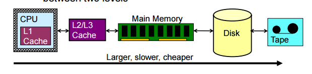
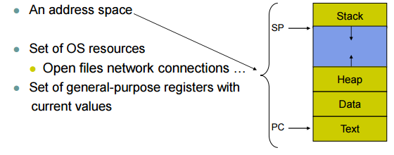
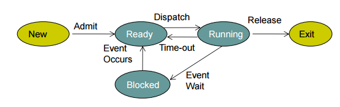
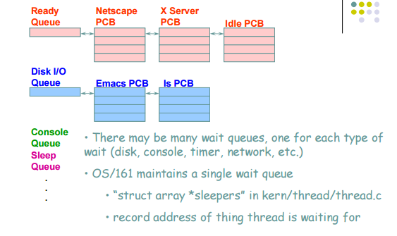

WEEK1: Intro to OS, Processes, threads
Intro to OS
- Regard OS as: abstraction provider, resource manager, program controller
- Kernel mode: Core to operating system, had the permission to access the OS. Normal prorgams are in user mode, which cannot access to the OS
- About the storage:
- 
- Concurrency: problem caused by multiple processes executes concurrently.
Processes and threads
- Process: a prorgam in exexution, its like a container that contains all execution states of program in execution, and is named by the PID
- 
- Process Control Block(PCB): process's data structure, contains all info about process, where OS keep all process' execution state(see the picture) when process not running
- Process state: ready/ blocked/ running
- 
- State queues: OS keep track of processes by a collection of queues, one queue for each state
- 
- Context switch: switch the CPU to another process, save state of old process, load saved state for new process
- Opreations on processes:
- process creation: process created by another process, fork (review in CSC209)
- process termination
- Parallel prorgams: create several processes that execute in parallel/ shared memoru for processes to share data, OS schedule these processes in parallel. parallel program is INEFFICIENT
- Parallel prorgams => cooperating processes share:
- same code and data
- same privileges (what does that mean?)
- same resources
- execution states like PC SP registers
Intro to Threads
- Thread: defines a sequential execution stream within a process (PC, SP, registers). Bound to a single process, but sinle process can have multiple threads. Processes are containers in which threads execute.
- Thread interface(Pthread API)
- Thread scheduling => scheduler determines when a thread runs. Uses queues to keep track of what threads are doing. Run queue/ ready queue